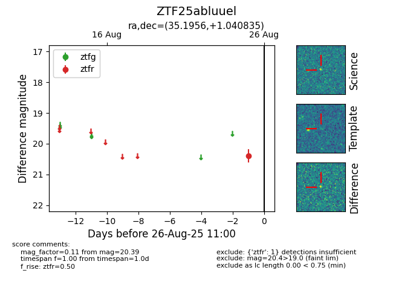

Target ZTF25abluuel at 2025-08-26 11:00, see:
FINK: fink-portal.org/ZTF25abluuel
Lasair: lasair-ztf.lsst.ac.uk/objects/ZTF25abluuel
ALeRCE: alerce.online/object/ZTF25abluuel
alt names
ZTF25abluuel (ztf,fink)
coordinates:
equatorial (ra, dec) = (35.1956,+1.04083)
galactic (l, b) = (163.8830,-54.56695)
photometry
last ztfr=20.39
1 ztfr detections
